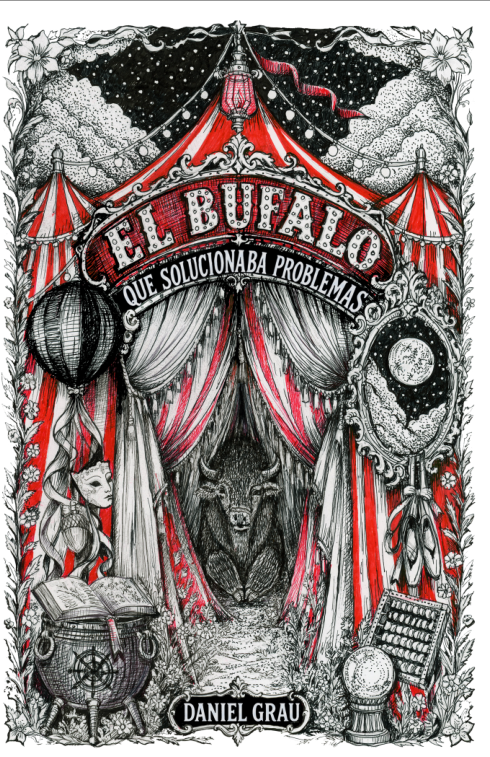

El búfalo que solucionaba problemas

Una feria de curiosidades llega al pueblo de un joven aprendiz de panadero. Movido por la curiosidad, recorre sus carpas y conoce a un búfalo. Desde entonces vuelve cada día: cada encuentro abre la puerta a una historia y a una manera distinta de contemplar aquello que creía conocer.
El búfalo que solucionaba problemas compone un ciclo de catorce relatos entrelazados donde lo cotidiano se desplaza hacia lo simbólico y lo maravilloso. Con una voz serena, ternura, ironía amable y humor sutil, sus cuentos exploran la identidad, el miedo, los vínculos, la percepción, el conocimiento, la imaginación y el deseo de controlar la vida.
Entre la fábula contemporánea para adultos, el cuento fantástico y la reflexión filosófica, el libro no ofrece respuestas cerradas ni moralejas impuestas. Invita a detenerse ante las preguntas, observarlas desde otro ángulo y conservar intacta una parte de su misterio.